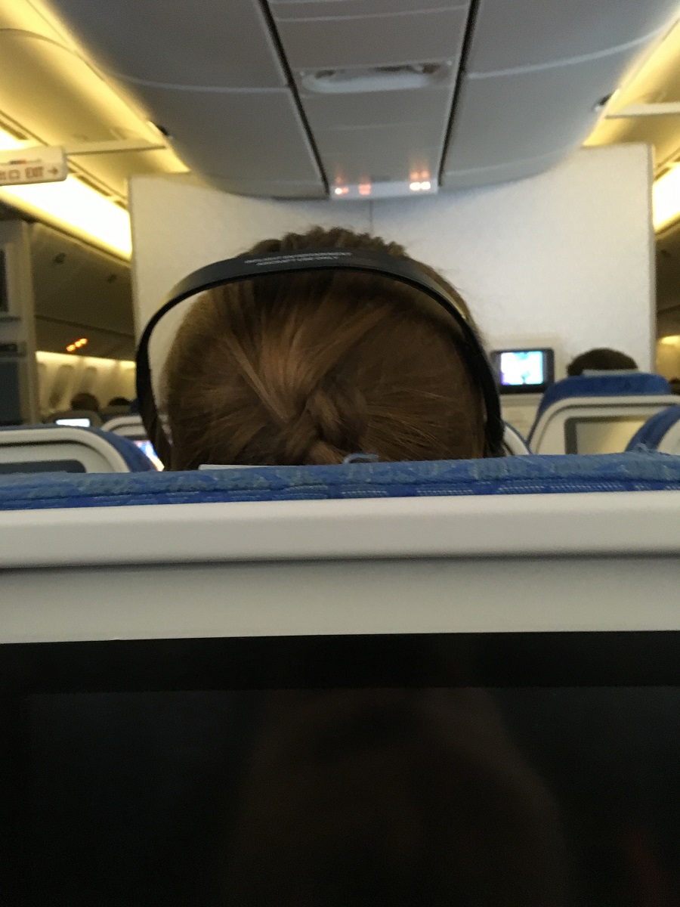
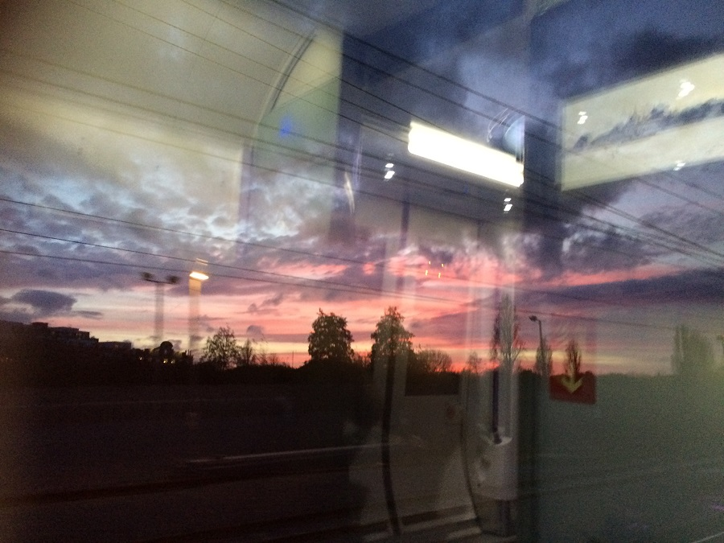

Hello Brisbane International Airport!
My first Uber ride (that I paid for) was a lovely experience. ANNNND CHEAP!
00:50 departure to Hong Kong with a flight time of 8 hrs and 15 min

2 hr layover in Hong Kong
13 hr flight to London
on check in for the London flight was super disappointed to find that Lang and I were not seated together :-(
Great view from 46E ... The back of my head sitting in 45E
3 movies, 2 TV shows, multiple awkward bathroom visits and 13 hrs later we touch down at Heathrow International Airport
Walking out of the plane and across the airbridge at 15:00 local time I was surprised to see the sun already setting. Lazy bastard!
The colours in the London early afternoon sun set reminded me of Roma (QLD)
No surprise we were up early. I had passed out by 19:30 the night before completely oblivious to the sound of the rumbling underground gently vibrating through our hotel room.
Dressed and out the hotel door just after 05:00 local time (approx 15:00 Brisbane time)
First tube ride of the day

Lang and I touristed the shit out of inner London.
I was shocked when we walked out of Westminster Station approx 10 min later and BOOM! There was Big Ben in all his glory!

21,000 steps later and we had visited:
Parliament House
Parliament Square
Trafalgar Square
London Eye
Downing Street
Covet Garden Markets
Piccadilly Circus (Spoiler: There are no clowns)
Leicester Square